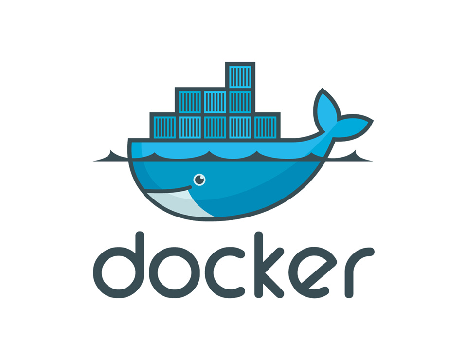
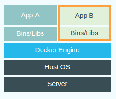

Docker

20 de Abril de 2015
20 de Abril de 2015
VS

Note
Ejemplo de Dockerfile:
FROM ubuntu:14.10
MAINTAINER Ariel Gerardo Ríos
RUN apt-get update
RUN apt-get install -y htop
RUN apt-get install -y nginx
RUN apt-get install -y cpuburn
ADD . /code
WORKDIR /code
# ENTRYPOINT ["burnP6"]
EXPOSE 80
RUN echo "Hello world!"
RUN service nginx start
Creando una imagen:
~$ sudo docker build -t ariel17/image_name .
Sending build context to Docker daemon 15.36 kB
Sending build context to Docker daemon
Step 0 : FROM ubuntu:14.10
---> 59a878f244f6
Step 1 : MAINTAINER Ariel Gerardo Ríos
---> Using cache
---> 9ccedeb1ff03
Step 2 : RUN apt-get update
---> Using cache
---> 4cdb3613c092
...
Step 8 : RUN echo "Hello world!"
---> Using cache
---> d8722569a228
Successfully built d8722569a228
Accediendo a una imagen por terminal:
~$ sudo docker run -ti --rm ariel17/image_name /bin/bash
root@98bf7687450d:/code#
Ejecutando una imagen como demonio:
~$ sudo docker run -d -p 9999:80 ariel17/image_name
a8f634e7882b8b1e7a8d9068018066f98d16ef8a55a303f0995b58e97ce6c768
Note
Ariel Gerardo Ríos